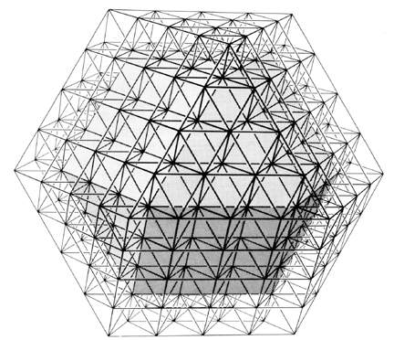

|  |
| Fig. 1074.13 Nuclear Structural Systems: Nuclear structural systems consist entirely of tetrahedra having a common interior vertex. They may be interiorly truncated by introducing special case frequency. which provides chordal as well as radial modular subdivisioning of the isotropic-vector-matrix intertriangulation. while sustaining the structural rigidity of the system. |